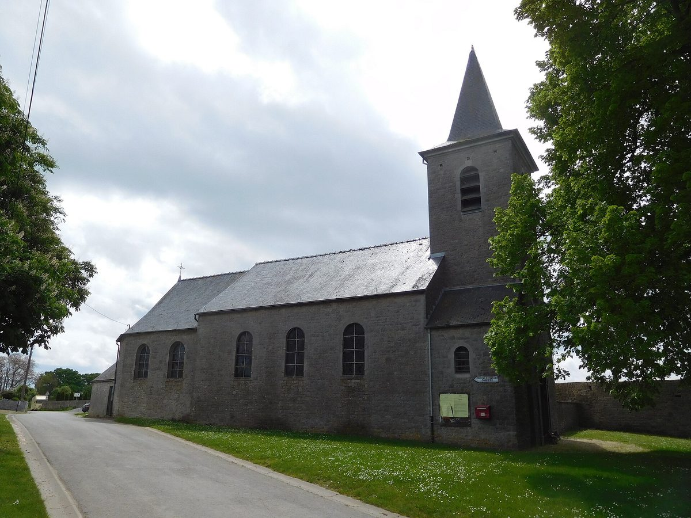

벨기에 주민 60여 명 마을 오메제, 협동조합이 700m 목재칩 열망 추진…지분 1구좌 250유로로 시민 출자 모집

'에네르지 포지티브 오메제', 이웃 숲 목재 부산물로 주택 10여 채·특수학교·청소년 시설·성당 난방 계획…허가 앞두고 사업비 일부 못 구해, 열망에 연결 안 되는 사람도 조합원 가능
벨기에 왈롱 나뮈르주 필립빌시에 속한 주민 60명 남짓의 작은 마을 오메제(Omezée)에서 주민 협동조합이 마을 열망(지역난방망)을 놓는 사업을 추진하고 있다. 협동조합 '에네르지 포지티브 오메제(Energies positives Omezée)'는 배관 700m를 목재칩 보일러 2대에 잇고, 이웃 숲에서 나오는 목재 부산물로 화석연료 난방을 대신한다는 계획이다. 연결 대상으로는 주택 10여 채와 청소년 주거 서비스 시설 1곳, 특수학교 1곳, 마을 성당이 꼽힌다. 공동 창립자 브뤼노 말테르(Bruno Malter)는 벨기에 공영방송 지역 라디오에 나와 허가가 곧 나올 것으로 보이고 허가가 나면 바로 공사를 시작할 수 있지만, 사업비 일부는 아직 마련하지 못했다고 밝혔다. 이에 협동조합은 1구좌 250유로의 조합 지분으로 시민 출자를 받고 있으며, 돈 대신 시간을 내 일손을 보태는 참여도 받고 열망에 연결되지 않을 사람도 누구나 조합원이 될 수 있게 했다. 말테르 공동 창립자는 사업이 마을 사람들을 한데 묶고 있다며 "스스로 힘을 모아 화석연료에서 벗어날 수 있다는 것을 보여 주고 싶다"고 말했다.
시민에너지 관점
주민 60여 명 마을이 250유로짜리 지분으로 열망 사업비를 모은다는 것은 시민에너지가 큰 도시나 큰 자본만의 일이 아니라는 점을 보여 준다. 마을이 너무 작아 사업성이 없다는 우려가 나올 수 있지만, 이 계획은 특수학교·청소년 시설·성당 같은 공공 수요를 기본 수요로 삼고 주택을 함께 묶어 규모의 한계를 메우려 한다. 열을 받지 않는 이웃에게도 조합원 문을 열어 둔 것은 설비의 주인이 열을 받는 가구에 그치지 않고 마을 전체가 되도록 하는 장치다. 국내 농산어촌의 마을 단위 에너지 사업도 공공시설 수요와 소액 주민 출자를 함께 묶는 조합 모델로 설계할 필요가 있다.
출처: RTBF 2026-10-30 Blandine Rans 원문 보기
住民60人余りのベルギー・オメゼ村、協同組合が700mの木質チップ熱導管網を計画…1口250ユーロで市民出資を募集
「エネルジー・ポジティブ・オメゼ」、近隣の森の木材残渣で住宅10戸余り・特別支援学校・青少年施設・教会を暖房する計画…許可を前に事業費の一部はまだ未調達、熱導管網につながらない人も組合員に
ベルギー・ワロン地域ナミュール州フィリップヴィル市に属する住民60人ほどの小さな村オメゼ（Omezée）で、住民の協同組合が村の熱導管網（地域暖房網）を敷く事業を進めている。協同組合「エネルジー・ポジティブ・オメゼ（Energies positives Omezée）」は、700mの配管を木質チップボイラー2基につなぎ、近隣の森から出る木材残渣で化石燃料の暖房を置き換える計画だ。接続先には住宅10戸余り、青少年向け居住サービス施設1か所、特別支援学校1校、村の教会が挙げられている。共同創設者のブリュノ・マルテール（Bruno Malter）氏はベルギー公共放送の地域ラジオに出演し、許可はまもなく下りる見込みで、下りればすぐに着工できるが、事業費の一部はまだ確保できていないと明らかにした。このため協同組合は1口250ユーロの組合出資で市民の参加を募っており、お金の代わりに時間を割いて作業を手伝う参加も受け付け、熱導管網につながらない人でも誰でも組合員になれるようにした。マルテール氏は事業が村の人々を一つにまとめていると述べ、「自分たちで力を合わせれば化石燃料から抜け出せることを示したい」と語った。
市民エネルギーの視点
住民60人余りの村が250ユーロの出資で熱導管網の事業費を集めることは、市民エネルギーが大都市や大資本だけのものではないことを示している。村が小さすぎて採算が合わないという懸念もありうるが、この計画は特別支援学校・青少年施設・教会といった公共の需要を基礎需要とし、住宅をまとめて規模の限界を補おうとしている。熱を受け取らない隣人にも組合員の門戸を開いたことは、設備の持ち主を熱を受ける世帯にとどめず村全体にするための仕組みだ。韓国の農山漁村の集落単位のエネルギー事業も、公共施設の需要と住民の少額出資を一緒に束ねる協同組合モデルで設計する必要がある。
出典: RTBF 2026-10-30 ブランディーヌ・ランス（Blandine Rans） 原文を読む
比利时60余人小村奥梅泽，合作社推进700米木屑供热管网…每股250欧元向市民募集出资
"积极能源奥梅泽"计划用邻近森林的木材剩余物为10余户住宅、特殊学校、青少年机构和教堂供暖…许可在即但部分资金尚未落实，不接入管网的人也可成为社员
在比利时瓦隆大区那慕尔省菲利普维尔市下辖、居民仅60人左右的小村奥梅泽（Omezée），一家居民合作社正在推进铺设村级供热管网（区域供暖网）的项目。合作社"积极能源奥梅泽"（Energies positives Omezée）计划把700米管道连接到2台木屑锅炉，用邻近森林产生的木材剩余物取代化石燃料供暖。计划接入的对象包括10余户住宅、1处青少年居住服务机构、1所特殊学校和村里的教堂。联合创始人布鲁诺·马尔特（Bruno Malter）在比利时公共广播的地方电台节目中表示，许可看来很快就会下来，一旦获批即可迅速开工，但部分项目资金尚未筹齐。为此，合作社以每股250欧元的社员股份向市民募集出资，也接受以时间和劳力代替资金的参与方式，并且规定即便不会接入供热管网的人也都可以成为社员。马尔特表示，这个项目正把村民凝聚在一起，"我们想证明，靠自己动员起来就能摆脱化石能源"。
市民能源视角
一个只有60余名居民的村庄用每股250欧元的出资来筹集供热管网资金，说明市民能源并不只属于大城市或大资本。有人可能担心村子太小、项目缺乏经济性，但这一计划以特殊学校、青少年机构、教堂等公共需求作为基础负荷，再把住宅一并纳入，以弥补规模上的不足。向不接受供热的邻居同样敞开社员大门，是让设施的主人不只限于用热家庭、而是整个村庄的制度安排。韩国农山渔村以村为单位的能源项目，也应设计成把公共设施需求与居民小额出资结合起来的合作社模式。
来源: 比利时法语广播电视台（RTBF） 2026-10-30 布朗迪娜·朗斯（Blandine Rans） 查看原文
Belgian village of Omezée, home to about 60 people, plans 700-metre wood-chip heat network through a cooperative, selling 250-euro shares to citizens
'Energies positives Omezée' plans to heat a dozen homes, a special-needs school, a youth facility and the church with residues from nearby forests; permit expected soon but part of the funding still missing, and people who will not be connected can also join
In Omezée, a small village of around 60 residents in the municipality of Philippeville in Belgium's Namur province, Wallonia, a residents' cooperative is working to build a village heat network. The cooperative 'Energies positives Omezée' plans to connect 700 metres of pipes to two wood-chip boilers, replacing fossil-fuel heating with wood residues from neighbouring forests. The buildings lined up for connection are about a dozen homes, a residential service for young people, a special-needs school and the village church. Co-founder Bruno Malter, speaking on a regional programme of Belgian public radio, said the permit appears imminent and work could start quickly once it is granted, but that part of the funding has yet to be found. The cooperative is therefore calling on citizens to join, with one cooperative share costing 250 euros; members can also contribute their time instead of money, and anyone can become a member, including people who will never be connected to the network. Malter said the project is bringing villagers together, adding that "we want to show that it is possible to get out of fossil fuels by mobilising ourselves."
Citizen Energy View
A village of about 60 people raising money for a heat network through 250-euro shares shows that citizen energy is not reserved for big cities or big capital. Some may worry that the village is too small to make the project viable, but the plan uses public demand from a special-needs school, a youth facility and the church as its base load and adds homes to overcome the limits of scale. Opening membership to neighbours who will not receive heat is a way of making the whole village, not only the connected households, the owner of the system. Village-level energy projects in rural Korea should likewise be designed as cooperatives that combine public-building demand with small investments from residents.
Source: RTBF 2026-10-30 Blandine Rans Read the original